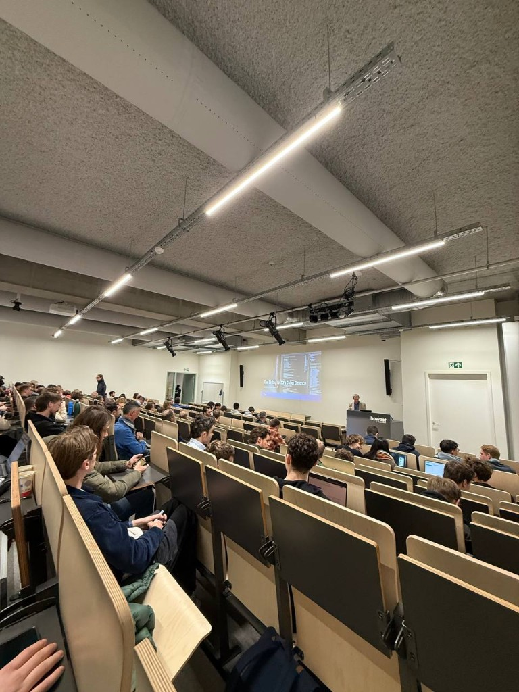
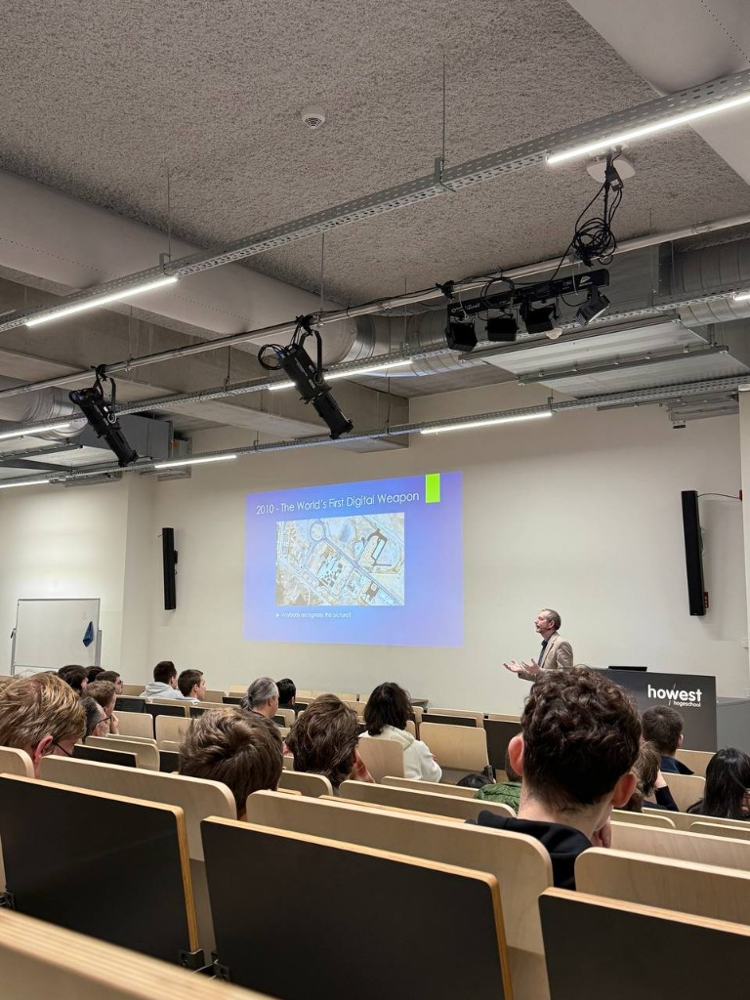

Tech&Meet — NATO cyber defence

Opening frame: how NATO’s cyber defence took shape — and why it still matters today.
This week’s Tech&Meet on NATO’s cyber defence was a very insightful session. It shed light on how large-scale cyber defence is organised in practice — not as a movie plot, but as institutions, doctrine, and daily operations that have to work when politics and technology both move fast.

2010 and Stuxnet: the moment “cyber” became a strategic weapons conversation.
Beyond screens and servers
What stood out most is how deeply cyber has moved beyond laptops and data centres. Drones, planes, ships, trains — all run on code. That makes robust cybersecurity a hard requirement for both national and civil infrastructure, not an optional IT upgrade. The session made that tangible: compromise software in the wrong place and physical systems are in play. Cyber is always on, even when most of us are not thinking about it.
Preparation beats a frozen plan
The second big insight was the emphasis on preparation over static plans. The idea that “the plan is nothing, planning is everything” hit home. Contingency planning, disaster recovery, and business continuity only work when they are designed together and continuously adapted — not filed once and forgotten.
That matters even more with hybrid threats, weaponised AI, and incidents where attackers pursue legitimate IT jobs to get inside organisations. In that world, strategy and sustained risk management outweigh any single shiny tool. NATO-scale defence is not “buy one product”; it is governance, exercise, intelligence sharing, and legal frameworks aligned with technical reality.
People, process, technology
As someone focused on cybersecurity, it was a powerful reminder that effective defence is people, processes, and technology in sync. Civil cybersecurity and military capabilities both contribute to overall resilience — pipelines, hospitals, and banks depend on the same seriousness as defence networks, even when the uniforms differ.
I left with a clearer picture of why my field is not only about tools and certs (though those help), but about how organisations think under pressure. I would recommend this session to anyone who treats security as a niche add-on instead of infrastructure — and I am glad Howest keeps hosting Tech&Meet topics that connect classroom theory to what happens at alliance scale.